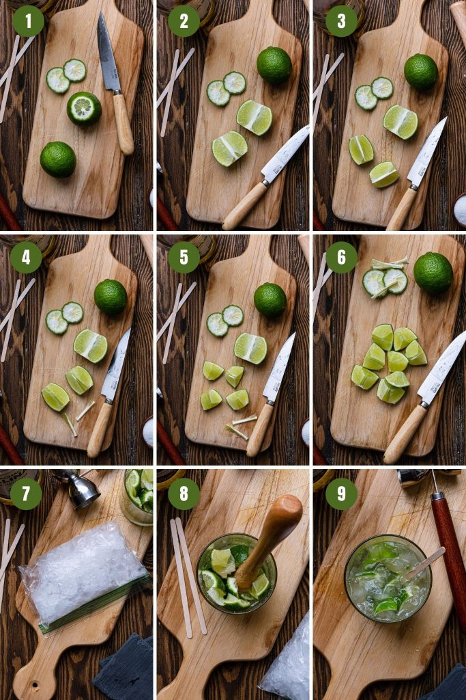

Gather your friends, it's BBQ time!
Ingredients:
- LIMES – Choose Persian limes over Key limes. They are larger and juicier, and therefore will yield more juice per fruit. Calculate 1 1/2 to 2 limes per drink.
- SUGAR – Use granulated sugar. You can also substitute for sweetener, if you want to cut calories!
- ICE – I like to use crushed ice for caipirinha. They add the right amount of dilution to an otherwise strong cocktail, while keeping your caipirinha consistently chilled.
- CACHAÇA – You can make caipirinha with white or aged cachaça, depending on your preference! White cachaça are smoother and more neutral, so it won’t overpower the drink as much. Aged cachaça packs more of a punch, have lower acidity, and will add a distinctive cachaça taste to your caipirinha.
How to make Caipirinha
A good caipirinha is one of the most refreshing cocktails you will ever drink!
However, even though it is made with only 4 ingredients and without any fancy equipment, they can be quite unpleasant if not prepared the right way.

Here are my tips so that doesn’t happen:
- Buy fresh limes!
- Don’t skip removing the white pith.
- Muddle just enough to release the lime juices. Don’t worry if the limes are not completely macerated! You don’t want to risk ending up with a bitter caipirinha!
- Be generous with the ice. Caipirinhas have to be ice cold!
- Buy good quality cachaça!
- Make the caipirinhas when you plan on serving them. They are at their best when freshly made!